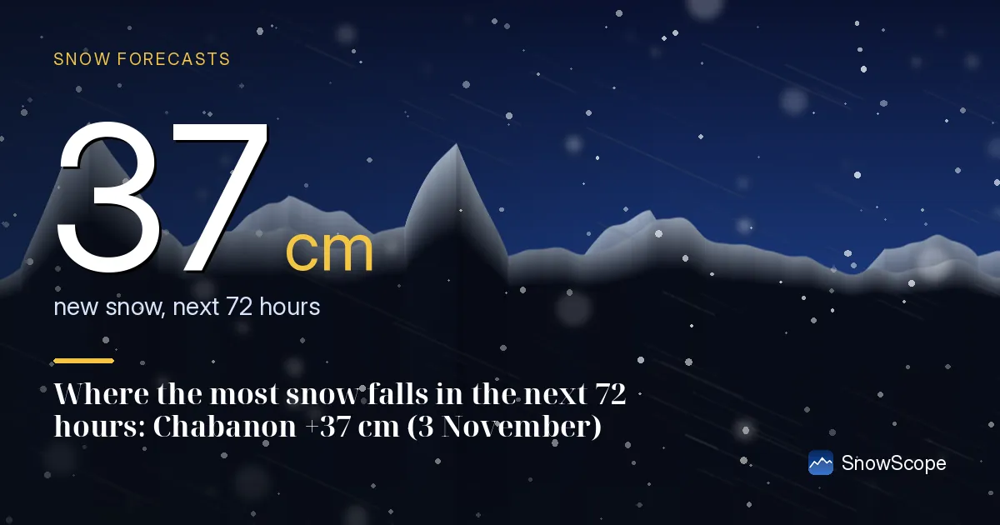

Where the most snow falls in the next 72 hours: Chabanon +37 cm (3 November)
Chabanon in the French Alps will collect the most snow across the northern hemisphere mountains in the next three days, reaching 37 cm by 6 November. We track the top 24 resorts worldwide to show you where the best conditions will be, what height to target, and when the snow line sits.
See the live snow forecast for Chabanon in the SnowScope appSnow depth, powder alerts and the 3D map, free.
The Alps lead through Wednesday
Three French resorts dominate the forecast for 72 hours. Chabanon will see 4 cm overnight, then 33 cm more through Wednesday evening, with new snow staying light above 2,100 m. Dévoluy and Montclar follow closely with 34 cm and 33 cm respectively, though both start slower: Dévoluy gets just 2 cm tonight, Montclar 4 cm. The snow line in the region sits between 2,100 m and 2,200 m, so aim high.
Smaller resorts across the same ranges also feature strongly. Chaillol, Isola 2000, and Val d'Allos each expect 32–33 cm over three days, while Orcières Merlette reaches 30 cm. Isola 2000 is the exception: it gets 12 cm in the next 24 hours alone, nearly double its peers. This is worth watching if you plan to leave early tomorrow.
| # | Resort | Region | +24 h | +72 h | Snow line |
|---|---|---|---|---|---|
| 1 | Chabanon | Alps · France | 4 cm | 37 cm | 2,100 m |
| 2 | Dévoluy | Alps · France | 2 cm | 34 cm | 2,100 m |
| 3 | Montclar | Alps · France | 4 cm | 33 cm | 2,200 m |
| 4 | Chaillol | Alps · France | 2 cm | 33 cm | 2,100 m |
| 5 | Isola 2000 | Alps · France | 12 cm | 32 cm | 2,000 m |
| 6 | Val d'Allos | Alps · France | 3 cm | 32 cm | 2,000 m |
| 7 | Crissolo | Alps · Italy | 12 cm | 31 cm | 1,700 m |
| 8 | Orcières Merlette | Alps · France | 3 cm | 30 cm | 2,000 m |
| # | Resort | Region | +24 h | +72 h | Snow line |
|---|---|---|---|---|---|
| 1 | Mt Baker | US West · United States | 0 in (0 cm) | 11 in (28 cm) | 5,200 ft (1,600 m) |
| 2 | Monarch Mountain | US West · United States | 1 in (2 cm) | 6 in (14 cm) | 10,200 ft (3,100 m) |
| 3 | Alpental | US West · United States | 0 in (0 cm) | 5 in (12 cm) | 6,900 ft (2,100 m) |
| 4 | Ski Cooper | US West · United States | 1 in (3 cm) | 4 in (11 cm) | 10,500 ft (3,200 m) |
| 5 | Stevens Pass | US West · United States | 0 in (0 cm) | 4 in (11 cm) | 6,900 ft (2,100 m) |
| 6 | Dutch Henry Ski Hill | US West · United States | 1 in (3 cm) | 4 in (10 cm) | 10,500 ft (3,200 m) |
| 7 | Crystal Mountain | US West · United States | 0 in (0 cm) | 4 in (10 cm) | 7,500 ft (2,300 m) |
| 8 | Copper Mountain | US West · United States | 1 in (3 cm) | 4 in (9 cm) | 10,800 ft (3,300 m) |
| # | Resort | Region | +24 h | +72 h | Snow line |
|---|---|---|---|---|---|
| 1 | Ski Callaghan | Western Canada · Canada | 0 cm | 33 cm | 1,200 m |
| 2 | Mount Cain Alpine Park | Western Canada · Canada | 4 cm | 31 cm | 1,300 m |
| 3 | Whistler Blackcomb | Western Canada · Canada | 0 cm | 25 cm | 1,200 m |
| 4 | Tweedsmuir Ski Club | Western Canada · Canada | 0 cm | 18 cm | 1,300 m |
| 5 | Sasquatch | Western Canada · Canada | 0 cm | 14 cm | 1,400 m |
| 6 | Revelstoke | Western Canada · Canada | 0 cm | 11 cm | 1,400 m |
| 7 | Grouse Mountain | Western Canada · Canada | 0 cm | 10 cm | 1,400 m |
| 8 | Manning Park Resort | Western Canada · Canada | 0 cm | 6 cm | 1,400 m |

Italy's south-facing slopes catch the system
Crissolo, on the Italian side of the Alps near Mont Viso, ranks seventh globally with 31 cm forecast over 72 hours and an unusually low snow line of 1,700 m. This means the snowfall starts at a lower altitude than in France, so mid-mountain terrain will stay skiable. Crissolo also gets 12 cm in the next 24 hours, matching Isola 2000.
The snow line difference matters for early-season snow cover. At 1,700 m, the new snow will lie on more existing base, whereas in the northern French Alps at 2,100 m you are adding to thinner cover. Check the SnowScope map to see where the previous snow sits before you travel.

Pacific Northwest leads North America
Mt Baker (Washington State) is set to receive 11 in (28 cm) over 72 hours, with almost none tonight. The snow line is forecast near 5,200 ft (1,600 m), which is unusually low for November on the west side of the Cascades, so significant new cover should reach the mid-mountain terrain. Monarch Mountain in Colorado takes second place in the US with 6 in (14 cm), but its snow line is 1,000 ft higher, limiting the useful accumulation to upper runs.
Smaller resorts at Alpental, Ski Cooper, Stevens Pass, and Crystal Mountain each expect 4–5 in (10–12 cm) through Wednesday. Dutch Henry and Copper Mountain also feature, though Copper's snow line climbs to 11,000 ft (3,300 m), so accumulation stays reserved for the highest terrain. Expect wet snow or rain below that height.
Western Canada: a split forecast
Ski Callaghan leads Canada with 33 cm forecast over 72 hours, though it receives no new snow in the next 24 hours. Mount Cain Alpine Park is the exception: it gets 4 cm tonight, then 27 cm more by Wednesday. Whistler Blackcomb, despite its size, ranks third with 25 cm, all arriving after tomorrow morning. The snow line across British Columbia stays between 1,200 m and 1,400 m.
Later in the forecast window, Tweedsmuir, Sasquatch, Revelstoke, and Grouse Mountain each expect 10–18 cm. These are measured as upper-slope estimates, so access via local lifts will determine how much skiers actually gain. Manning Park Resort brings up the forecast with only 6 cm, suggesting the system weakens inland or at lower elevations.
Reading the numbers: snow line and depth
The snow line, shown for each resort, marks where new snow turns to rain or wet snow. This line sits roughly 300 m below the forecast freezing level. Snow above the line stays dry and light; below it, expect heavy, wet snow or just rainfall. On 3 November, most Alpine snow lines sit between 1,700 m and 2,200 m, while North American resorts show lines from 1,600 m (Mt Baker) to 3,300 m (Copper Mountain).
These totals represent SnowScope's forecast for the upper slopes of each resort. Exact accumulation depends on aspect, altitude, and how the weather system tracks. A resort's local weather station, if it has one, will show you one specific point, not the whole mountain. Use the map alongside the numbers to pick your line.
What to do in the next 48 hours
Overnight snow is coming in the Alps and southern Canada, so an early start tomorrow at Chabanon, Isola 2000, or Mount Cain will catch fresh tracks. Mt Baker and the Pacific Northwest stay dry through tomorrow, but powder conditions arrive Thursday morning. In the Colorado high country, Monarch and Ski Cooper see snow overnight and Wednesday.
Before you pack the car or book a flight, remember that forecasts three days out shift. Check the SnowScope map again the evening before you travel. If you plan to venture off-piste or into the backcountry, read the official avalanche bulletin for your region; fresh snow on a thin base can mean instability.
Tips for skiers
- Target Chabanon or Isola 2000 tomorrow morning if you can reach the Alps; both get fresh powder overnight and throughout Wednesday.
- In the US West, Mt Baker wins the race, but no fresh snow falls until Thursday. Aim for first light on Thursday if you go there.
- High elevation matters. Resorts with snow lines above 3,000 m (Monarch, Ski Cooper, Copper) will have powder only on their steepest terrain; mid-mountain will stay wet or rain. Pick Chabanon or Mt Baker instead if you want skied snow across a range of altitudes.
- Before you ski off-piste or tour in avalanche terrain, check the official avalanche forecast for the region. Early-season snow on thin base can be unstable.
- Get a powder alert in the SnowScope app to know exactly when fresh snow arrives at your chosen resort, so you can time your trip.
About these numbers
Resort snow depths are the deepest snow on the resort's upper slopes on the date shown; they are estimates for an area, not a measurement at one point. Forecasts can change. Always read the official avalanche bulletin before going off-piste.
Official avalanche bulletins: EAWS (Europe) · avalanche.org (US) · Avalanche Canada
Cite this report
For research, teaching or the press: the numbers and charts are free to reuse under CC BY 4.0 with this citation.
SnowScope (2026), Where the most snow falls in the next 72 hours: Chabanon +37 cm (3 November), https://snowscope.app/blog/en/2026/11/where-most-snow-falls-next-72-hours-3-november-2026.html, accessed 2026-11-03
SnowScope (Atlas Labs). (2026, November 3). Where the most snow falls in the next 72 hours: Chabanon +37 cm (3 November). SnowScope snow reports. https://snowscope.app/blog/en/2026/11/where-most-snow-falls-next-72-hours-3-november-2026.html
BibTeX
@misc{snowscope2026wheremostsnowfallsnext72,
author = {{SnowScope (Atlas Labs)}},
title = {Where the most snow falls in the next 72 hours: Chabanon +37 cm (3 November)},
year = {2026},
month = nov,
howpublished = {\url{https://snowscope.app/blog/en/2026/11/where-most-snow-falls-next-72-hours-3-november-2026.html}},
note = {Published 2026-11-03 16:31 UTC; accessed 2026-11-03}
}· CC BY 4.0 · Methods, data and tools →
Chabanon: snow and temperature by height, this winter vs last (tools) →
Follow Chabanon
Free: a message when fresh snow is coming, and the forecast every morning.
More snow reports

Whistler Blackcomb leads with 103 cm forecast in 72 hours. Orcières Merlette tops Europe with 36 cm. Data from 6 November.

Whistler Blackcomb sits at 27 cm on 5 November, only 41 per cent of normal for this date. A major system brings 22 cm snow in the next 24 hours.

Whistler Blackcomb forecast: 74 cm in 72 hours; weeks 13, 12, 11 bring the year's deepest snow historically. Forecast from 5 November.